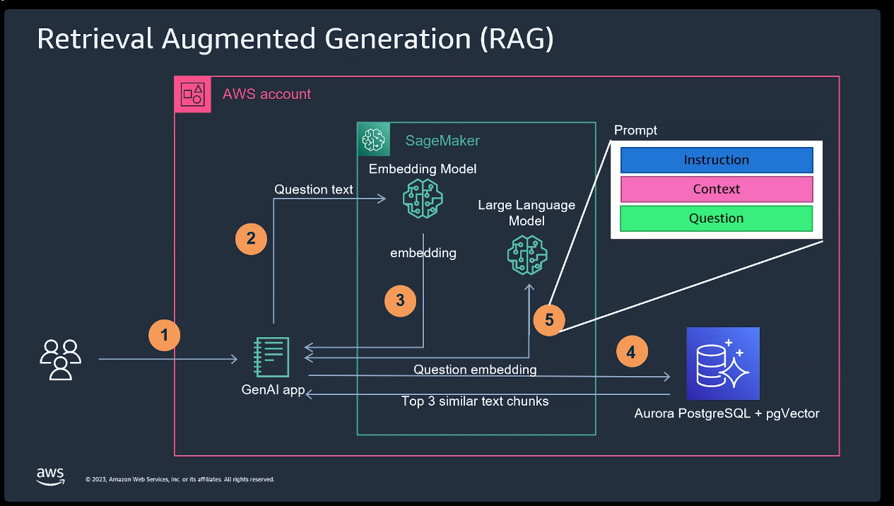
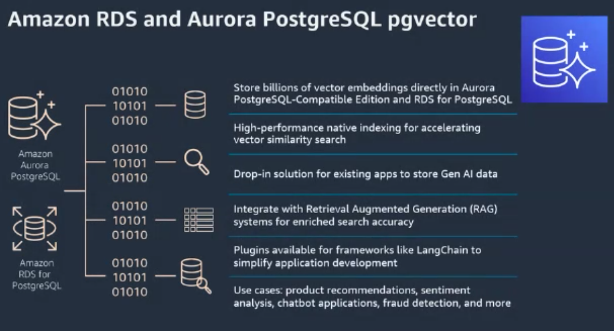
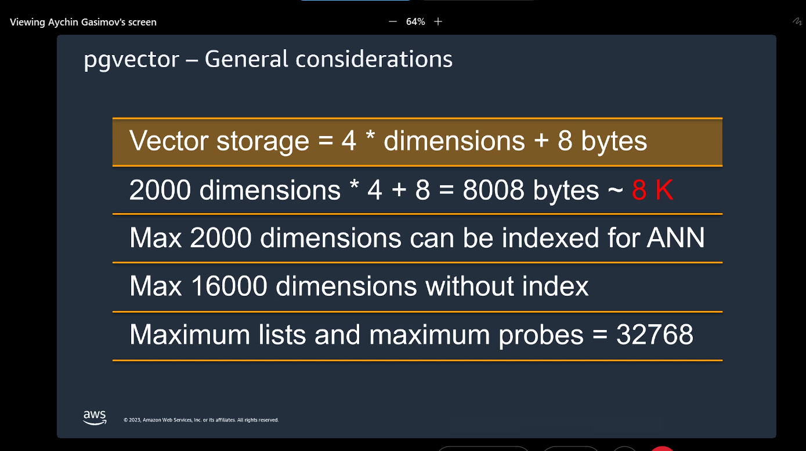

Note: Just putting down few notes from AWS partner-cast session
Vector Search and Vector Stores #
How to measure similarity in embeddings? #
-
Cosine Similarity: Gives the angle between the 2 embeddings. Higher the angle, bigger is the difference between 2 embeddings.
-
Dot-Product: Same as cosine similarity but gives us the magnitude between 2 vectors instead of direction/angle.
Real-life Use cases: #
-
Semantic search
-
Recommendation System
-
Anomaly detection and pattern recognition
-
GenAI: RAG (Retrieval Augmented Generation)
RAG Implementation in AWS: #

-
Vector embedding is used to find top 3 most similar chunks
-
In the prompts, the context provided needs to be given in natural language i.e english and not in embeddings format
-

-
Read about HNSW: Hierarchical Navigable Small Worlds (HNSW) | Pinecone and Nearest Neighbor Indexes: What Are ivfflat Indexes in pgvector and How Do They Work
-
Vector search is read-only
-
Read about: Knn search vs ANN search
-
Read about: Postgres integration with aurora and rds for vector search
-
